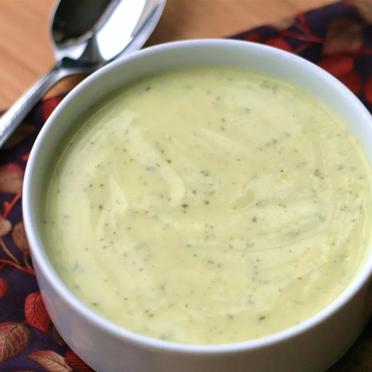

Zucchini Soup

Zucchini Soup's Photo from allrecipes.com
Description
This zucchini soup with cream cheese warms your belly on a chilly winter day. It's fast, easy, and inexpensive to make, so it's great for when an unexpected guest comes over. I keep it on hand at all times. It freezes well too!
-
Prep Time
15 mins
-
Cook Time
30 mins
-
Total Time
45 mins
-
Servings
4
Ingredients
- 5 cups water
- 5 zucchini, sliced
- 7 cubes chicken bouillon
- 1 (8 ounce) package cream cheese, softened and cut into 4 sections
Steps
-
Stir water, zucchini, and bouillon cubes together in a stockpot; bring to a boil. Reduce the heat to medium, then cover and simmer, stirring occasionally, until zucchini is tender, about 20 minutes.
-
Carefully drop cream cheese into the stockpot. Cook and stir until melted, about 5 minutes. Blend soup with an immersion blender until smooth.
Nutrition
-
Calories
236
-
Fat
20 g
-
Carbs
8 g
-
Protein
7 g